Case study / Unisys
Unisys Design System
A single Figma library for Unisys product work: color, type, spacing and components set up as variables with a light and a dark mode, and a full set of dashboard and AI tool screens built from those same parts.
- Role
- UI/ML Designer, design systems
- Company
- Unisys
- When
- July 2025 to April 2026
- Tool
- Figma variables, modes and components
- Typeface
- Tomato Grotesk
- Output
- Documented component library and screen set

What's in the file
The file is laid out the way people use it. Foundations first, then components, then the dashboard parts, then finished screens. Each page opens with the same header: the page name on the left, the Unisys mark on the right, and a green rule across the top.
Foundations
- Colors
- Typography
- Icons
- Shadows
- Spacing
- Grid layouts
- Border radius
Components
- Alerts
- Avatar
- Buttons
- Badges
- Checkbox
- Input fields
- Progress bar
- Toggle
- Popovers
- Tooltips
- Pagination
Dashboard parts
- Sidebar navigation
- Header and search
- Metric cards
- Charts
- Tables and lists
- Documentation blocks
Screens
- Seven dashboards
- AI tools
- Calendar, task, profile
- Forms and tables
- Chat, email, support
- Charts, UI elements
- Authentication
Color, in two layers
The colors live in two variable collections. Primitives hold the raw values: a twelve-step ramp for the Unisys green and twelve more for gray, status and accent colors, plus spacing, radius and type sizes. There are 323 of them.
Tokens sit on top and say what a color is for, like Text/Title Color or Border/Border. Each one points at a primitive in light mode and a different primitive in dark mode. Components only use tokens, so switching a screen to dark is one mode change and nothing has to be redrawn. There are 155 tokens.
The primitive ramps, read straight from the Figma variables. Hover or tab to a swatch for its name and hex value.
| Token | Light | Dark |
|---|---|---|
Text/Title Color | Gray/800 | White 90% |
Text/Text Color | Gray/700 | Gray/400 |
Text/Brand Color | Unisys/700 | Unisys/400 |
Background/Body | White | Gray/900 |
Border/Border | Gray/200 | Gray/800 |
Input/Brand focus border color | Unisys/300 | Unisys/800 |
Sidebar navigation/Nav Item/Nav Active Text | Unisys/700 | Unisys/400 |
Status/Warning/Light Text | Warning/600 | Orange/400 |
A few of the 155 tokens. The name says where it's used, and each mode points at a different step of the ramps above.
One typeface, eleven sizes
Everything is set in Tomato Grotesk, the Unisys brand face. The scale runs from Display 2xl at 72px down to Text xs at 12px, and every size comes in Regular, Medium, Semibold and Bold. That makes 44 text styles, each with its line height and rem value written next to it so engineering doesn't have to measure anything.
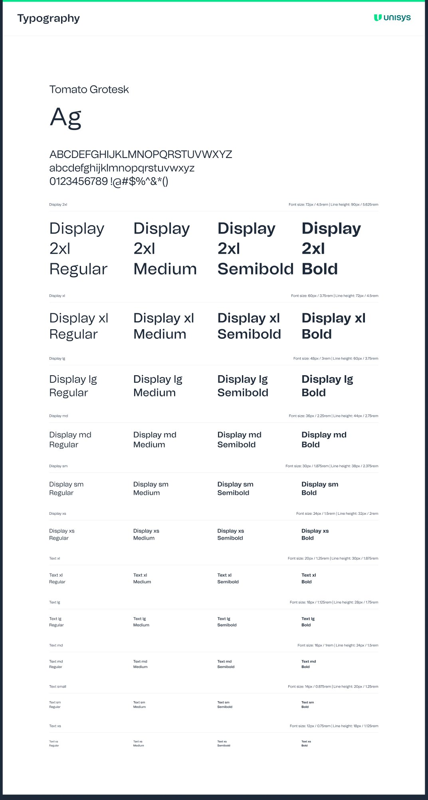
| Style | Size | Line height | Rem |
|---|---|---|---|
| Display 2xl | 72px | 90px | 4.5rem |
| Display xl | 60px | 72px | 3.75rem |
| Display lg | 48px | 60px | 3rem |
| Display md | 36px | 44px | 2.25rem |
| Display sm | 30px | 38px | 1.875rem |
| Display xs | 24px | 32px | 1.5rem |
| Text xl | 20px | 30px | 1.25rem |
| Text lg | 18px | 28px | 1.125rem |
| Text md | 16px | 24px | 1rem |
| Text sm | 14px | 20px | 0.875rem |
| Text xs | 12px | 18px | 0.75rem |
Spacing, radius and depth
Spacing runs on a 4px base, from 2px up to 384px. Corners have nine named steps, from none through 8px for cards and inputs to full for pills and avatars. Depth is seven shadow styles plus four focus rings, one each for default, brand, error and success.
Icons and components
The icon set is a single outline style on a 24px grid, covering navigation, actions, files, communication and commerce. Country flags and brand marks sit on their own pages next to it.
Every component shows its states laid out in rows: default, hover, focused and disabled. Buttons come in a filled and an outlined style, with and without leading and trailing icons, for 64 variants. Alerts come in success, warning, error and hint, each with and without a "Learn more" link.
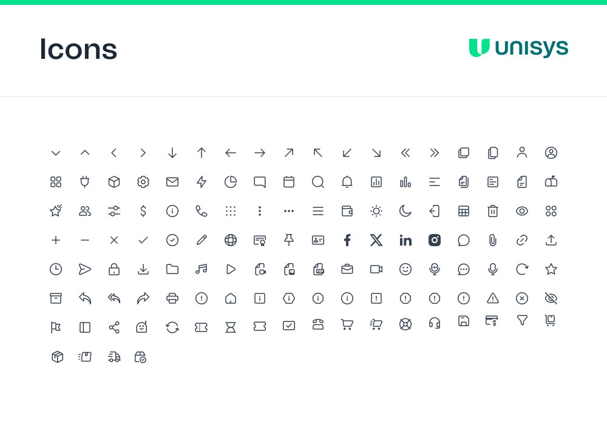
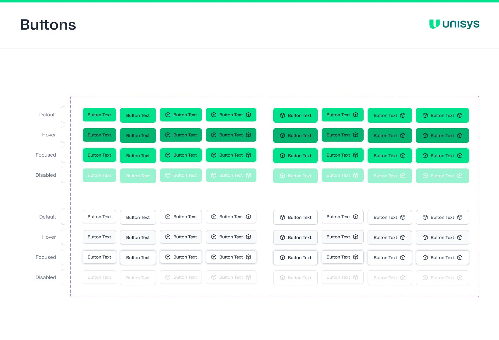
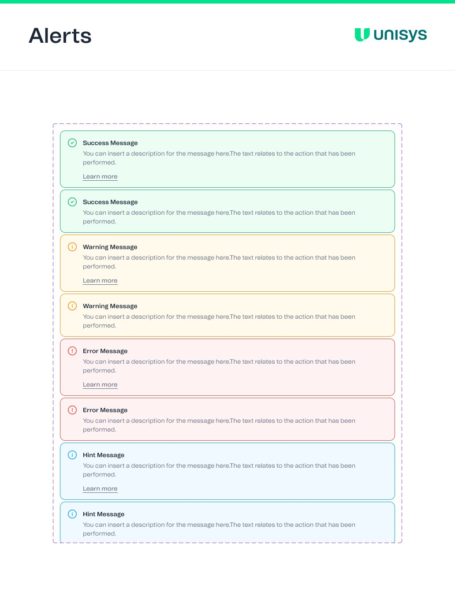
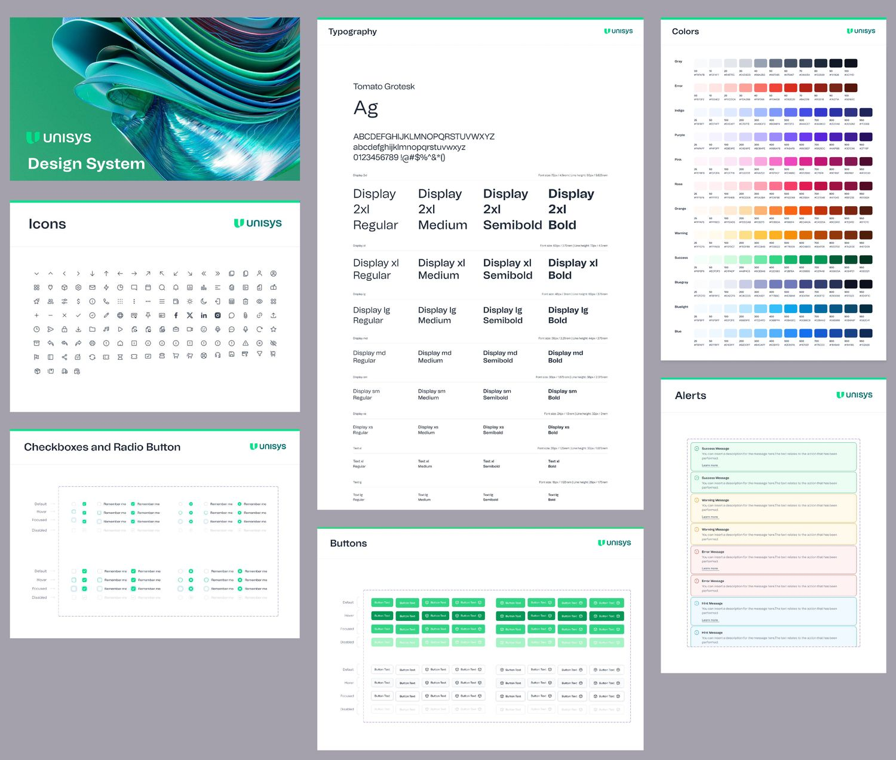
Screens built from the parts
The second half of the file puts the system to work. There are seven dashboards (analytics, e-commerce, marketing, CRM, stocks, SaaS and logistics), each in a desktop and a mobile layout, plus AI tools, calendar, tables, forms, chat, email and sign-in screens. Every one exists in light and dark, built from the same components with the dark mode applied.
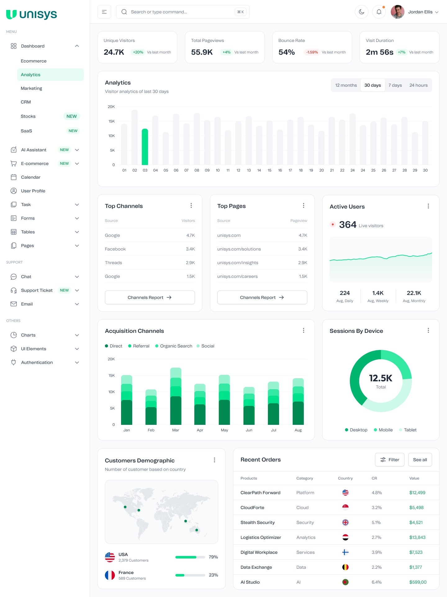
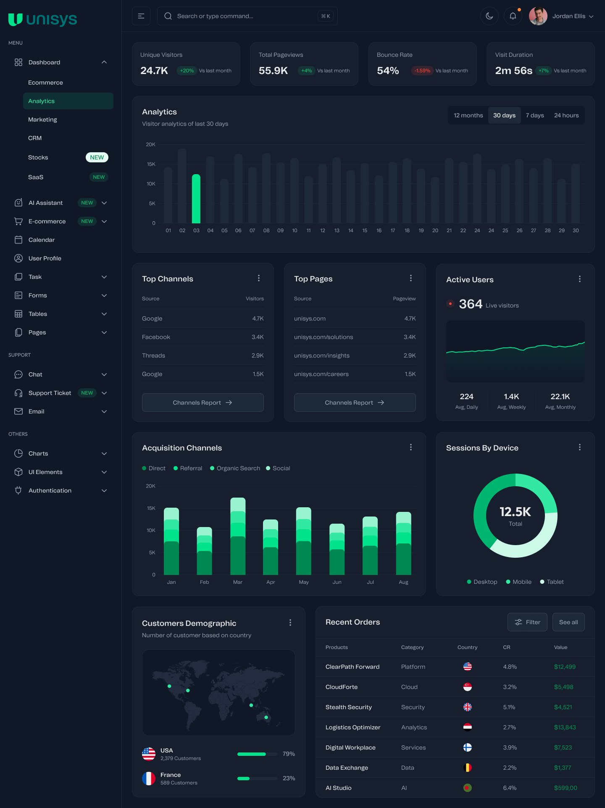
The analytics dashboard. Same layout and components, with the dark mode applied.
AI tools on the same shell
The AI section adds text, image, code and video generators. They reuse the sidebar, header, inputs and buttons from the dashboards and add a conversation layout: prompts on the right in the brand tint, responses on the left with a copy action, and a history panel grouped by day.
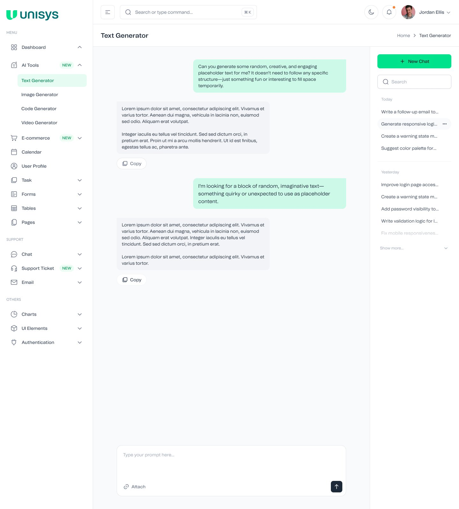
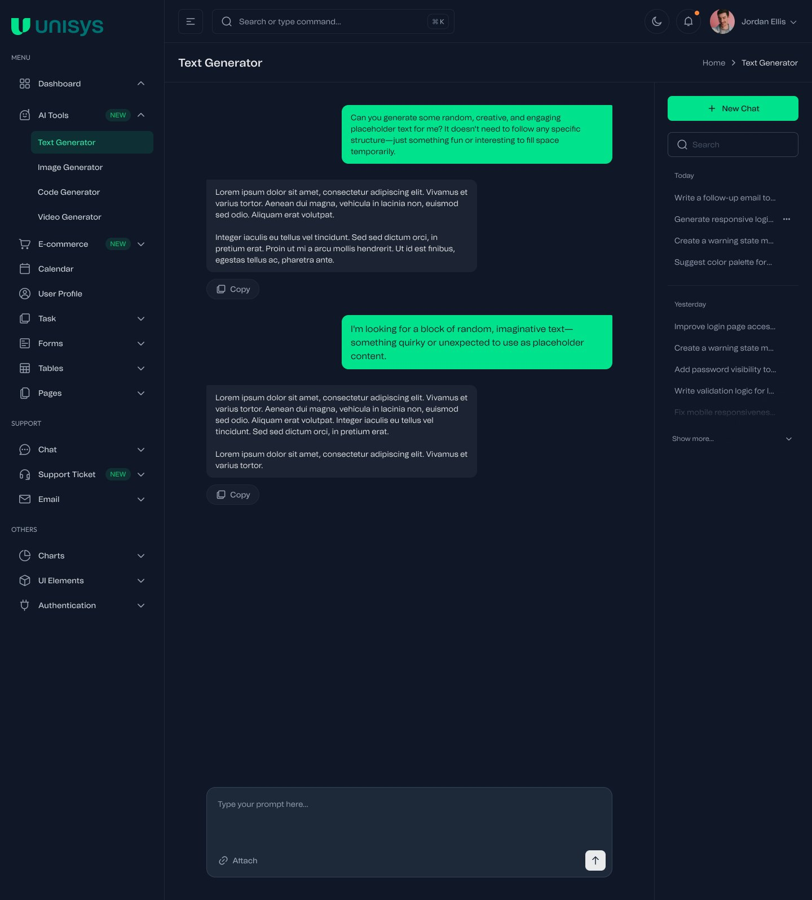
Every dashboard on a phone
On mobile the sidebar folds into a menu button and the cards stack into one column. Charts keep their legend and scroll sideways rather than squeezing the data.
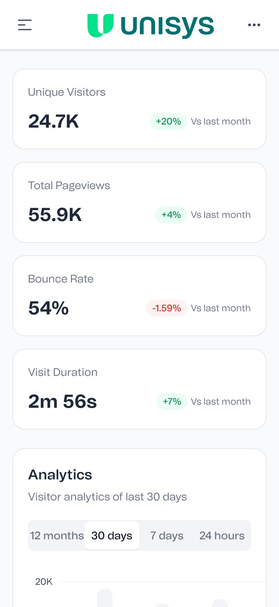
Analytics
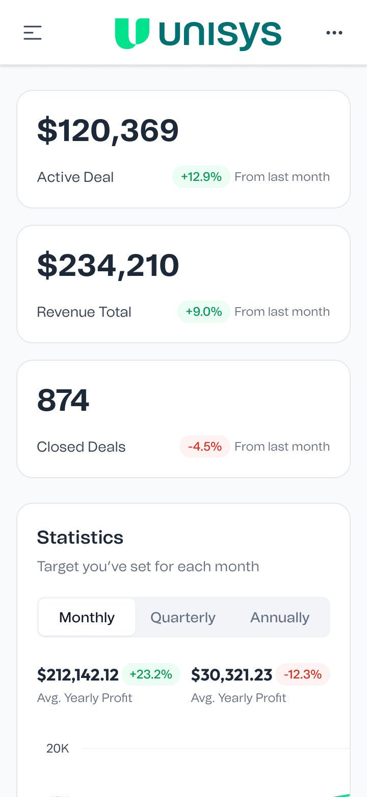
CRM
Why it's built this way
A system only saves time if people trust that the parts already do the right thing. Putting every color behind a named token, and every component behind those tokens, means a designer picking up a new screen starts from finished parts in both modes, and an engineer reading a spec sees a name instead of a hex value.
It's the same idea I used on the OCE guidelines at IQVIA, with better tools. There it was named color tokens and a labelled type scale. Here the names are live variables in Figma, and a change to a ramp shows up everywhere at once.
Name it once, use it everywhere, change it in one place.
Counts of variables, styles, components and screens are taken directly from the Figma file. Dashboard data, names and photos in the screens are placeholders.